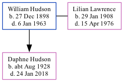

William Charles Hudson 1898 - 1963
[ Home ] | [ Calendar ] | [ Surnames Index ] | [ Family History ]William Hudson, the husband of Lilian Florence Lawrence (the aunt of Nigel Horne), was born in Herne Bay, Kent, England on Dec 27, 18981,2, was baptized there at Christ Church on Feb 26, 1899 and married Lilian (with whom he had 1 child, Daphne Patricia, ) at St Mary the Virgin Church, Minster, Thanet, Kent, England on Jun 11, 19274.
William spent all of his life in Kent, England. Throughout his life, he lived in several places around the county: at 16 Queen Street in Herne Bay on Mar 31, 19016; at 22 Underdown Terrace in Herne Bay on Apr 2, 19115; on Ebbsfleet Farm Cottages, Ebbsfleet Lane, Ebbsfleet in 1935, in 1936, on Sep 29, 19391, in 1952 and in 1955; and at 4 Ebbsfleet Farm Cottages, Ebbsfleet Lane, Ebbsfleet in Jan 1963.
He died on Jan 6, 1963 at Hill House Hospital, Tothill Street, Minster in Thanet3.
Children
- Daphne Patricia was born c. Aug 1928
Citations
- 1939 Register - Findmypast (was the head of the household)
- England & Wales births 1837-2006 - Findmypast
- England & Wales, National Probate Calendar (Index of Wills and Administrations),1861-1941 Online publication - Provo, UT, USA: Ancestry.com Operations Inc, 2010.Original data - Principal Probate Registry. Calendar of the Grants of Probate and Letters of Administration made in the Probate Registries of the High Court of Justice in England. Londo
- Kent, Canterbury Archdeaconry marriages 1538-1928 - Findmypast
- 1911 Census for England & Wales - Findmypast (was age 11 and the son of the head of the household)
- 1901 England, Wales & Scotland Census - Findmypast (was age 1 and the son of the head of the household)
Media
Probate

Thanet Advertiser - 14 Feb 1950

Thanet Advertiser - 29 Jul 1947

East Kent Times and Mail - 7 Jun 1952

1955 Kelly's Thanet Directory

1936 Kelly's Thanet Directory

1935 Kelly's Thanet Directory

Canterbury Marriages - GBPRS/CANT/M/97045503/1
Canterbury Marriage Banns - GBPRS/CANT/M/94063172/1
England & Wales deaths 1837-2007 - BMD/D/1963/1/AZ/000483/155
England & Wales births 1837-2006 Transcription - BMD-B-1900-1-AZ-000308-351
1911 England, Wales & Scotland Census Transcription - GBC-1911-RG14-04357-0521-4
England & Wales births 1837-2006 - BMD/B/1899/1/AZ/000298/058
1901 England, Wales & Scotland Census - GBC/1901/0006244943
1939 Register Transcription - TNA-R39-1820-1820H-018-03
England Births & Baptisms 1538-1975 - R_884301801
Kent Baptisms - GBPRS/CANT/B/96678873
Family Tree
Generated by ged2site. Last updated on Nov 13, 2024